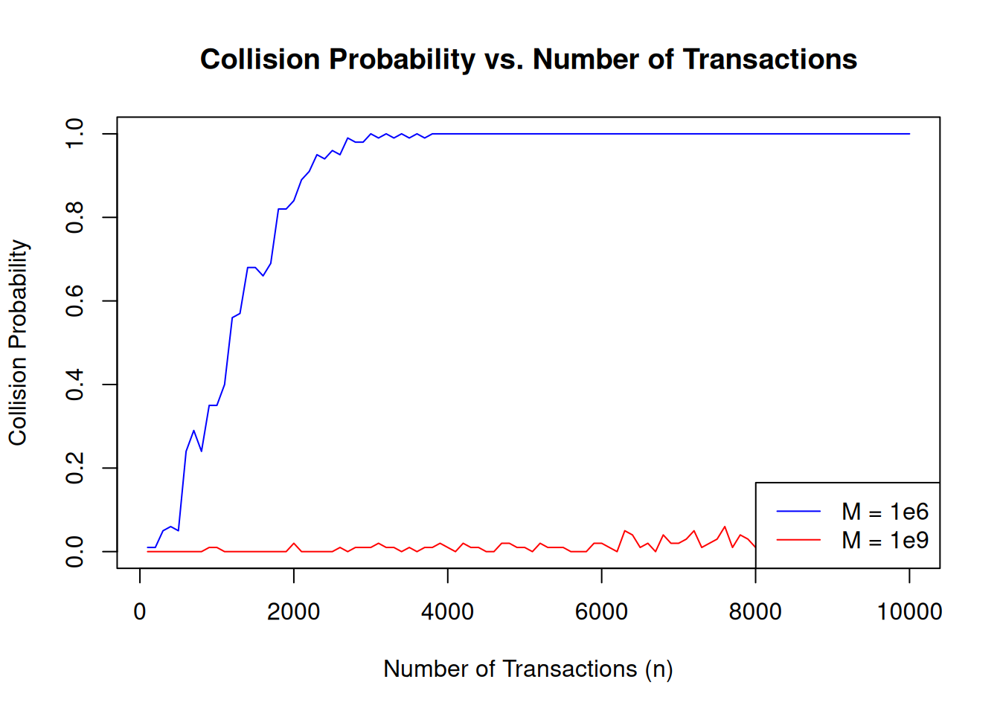
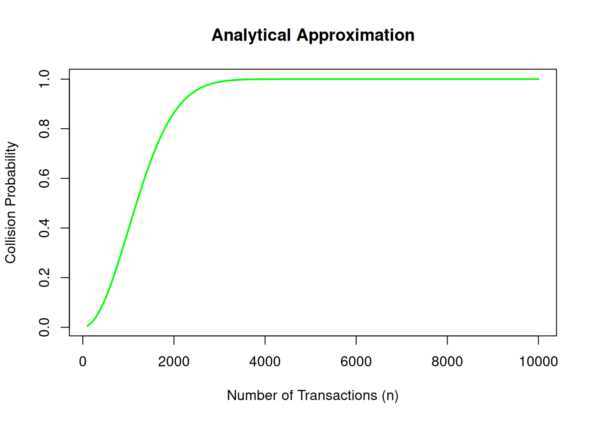

# Function to simulate transaction identifiers
simulate_identifiers <- function(n, M) {
sample(1:M, n, replace = TRUE)
}Project: Financial Identifier Collisions: Comments and one suggested Solutions
Project: Designing transaction identifyers for digital payment systems
In this project, we explore the likelihood of “collisions” in financial transaction identifiers. By simulating transaction identifiers and analyzing the probability of collisions, we can understand the challenges of designing secure financial systems.
Exercise 1: Simulate Transaction Identifiers
Task: Simulate transaction identifiers
We write an R function. The number \(n\) of identifiers and the size of the pool from which the identifiers are chosen \(M\) should be the parameters of the function. By choosing specific values for \(n\) and \(M\) we can then play with this simulation and check various parameter setups.
My proposed solution
Here is my function. Remember the R syntax for functions:
function name <- function(arg1, arg2, ...){ here goes the function body}
We us for simulation the sample()function. We choose from the numbers 1:M in total \(n\) numbers. We set replace = TRUE because it should be possible that in the random draw a number can be drawn more than once (sampling with replacements).
You can do this like in the lecture notes or in the examples we had on or slides:
It is always a good idea to test a function with an example to see whether the function does what you want. It is also a good idea to think upfront what you expect the function will do.
# Example: Simulate 100 identifiers from a pool of size 1,000,000
set.seed(123)
identifiers <- simulate_identifiers(100, 1e6)
identifiers [1] 969167 188942 134058 124022 685285 226318 365209 648795 985797 193627
[11] 569692 589449 832867 497690 402858 583422 183204 883281 669543 277324
[21] 944672 613997 402313 554826 449435 749877 401205 668896 377049 90077
[31] 268360 738879 815826 53241 684185 368917 917545 931930 761055 990324
[41] 895750 707016 356182 451743 994513 370482 43042 208909 268278 951027
[51] 546100 390233 564183 140712 783007 533614 914496 157582 807392 407619
[61] 457718 595791 307365 517171 638130 633068 117066 356479 747732 864017
[71] 867118 332707 506734 163678 933656 25559 669575 800719 416410 352238
[81] 952480 407707 607237 339728 507680 302647 690084 759022 741373 148441
[91] 424758 626825 452322 171704 227183 436420 37544 915038 230361 346571Comments: - \(n\) represents the number of transactions. - \(M\) represents the size of the identifier pool.
All numbers are in the range we have set. So this looks about right. We can even formally test this eyeballing statement.
sum(identifiers <= 10^6)[1] 100Here identifiers < = 100 is a logical condition. R checks for each identifier whether it fulfills the condition and returns TRUEwhen the condition is fulfilled. When we apply sum() to this vector of logicals induces R to transform the TRUEs to 1 and the FALSEs to 0 and in this way counts the entries for which the condition is true. If our function works correctly the condition must hold for each simulated identifier, otherwise we would have at least one choice not from the set poolsize.
Check for Collisions
Task
Write a function to check if a collision occurred in a set of identifiers.
Proposed solution
# Function to check for collisions
has_collision <- function(identifiers) {
any(duplicated(identifiers))
}This function checks whether our simulated identifiers contain duplicates first by using the duplicated() function. The syntax is duplicated(x)where xis a vector or a dataframe. and it returns a logical vector
For example:
# Example vector
x <- c(1, 2, 3, 2, 4, 1, 5)
# Find duplicates
duplicates <- duplicated(x)
# Print results
print(duplicates)[1] FALSE FALSE FALSE TRUE FALSE TRUE FALSEExplanation:
duplicated(x)checks each element in x and compares it to earlier elements.TRUEat position 4 means the value 2 is a duplicate of the 2 at position 2.TRUEat position 6 means the value 1 is a duplicate of the 1 at position 1.
In R, the any() function checks if at least one value in a logical vector is TRUE. It is commonly used to test conditions across multiple elements of a vector or array.
So applying anyto the output of duplictes() reveals if we have at least one collision.
Let us test our function now:
# Example: Check for collisions
has_collision(identifiers)[1] FALSEComments: - This function returns TRUE if there are duplicate identifiers, FALSE otherwise.
Estimate Collision Probability
Task
Simulate \(n\) transactions multiple times and estimate the probability of at least one collision.
Proposed solution
# Function to estimate collision probability
collision_probability <- function(n, M, trials = 10000) {
results <- replicate(trials, {
identifiers <- simulate_identifiers(n, M)
has_collision(identifiers)
})
mean(results)
}Let’s break down this R code step by step:
- Function Definition:
collision_probability <- function(n, M, trials = 10000) {
- This defines a function called
collision_probability. - Arguments:
n: The number of identifiers to generate.M: The size of the identifier space (how many unique identifiers are possible).trials: The number of simulations to run (default is10,000).
The function uses simulation to estimate the collision probability.
- Using
replicate:
replicate(trials, { ... })repeats the code inside the{}blocktrialstimes, storing the results in a vector.Inside the block:
- Generate Identifiers:
identifiers <- simulate_identifiers(n, M)
- Calls the
simulate_identifiersfunction to generatenrandom identifiers from a space of sizeM.
- Check for Collisions:
has_collision(identifiers)
- Calls the
has_collisionfunction to check if there are duplicates in theidentifiersvector. - Returns
TRUEif a collision is found andFALSEotherwise.
So, after replicate, results is a logical vector (e.g., c(TRUE, FALSE, TRUE, ...)), where each element corresponds to whether a collision occurred in one trial.
Calculating the Probability:
mean(results)
mean()calculates the average of the logical vectorresults.- In R,
TRUEis treated as1andFALSEas0. - The mean of
resultsis the proportion of trials where a collision occurred, i.e., the estimated collision probability.
- Returning the Result: The function returns the average collision probability across all trials.
Example Walkthrough:
Let’s assume: - simulate_identifiers(n, M) generates n random integers between 1 and M. - has_collision(identifiers) checks for duplicates.
If we call:
collision_probability(n = 5, M = 10)[1] 0.6956- The function runs
simulate_identifiers(5, 10)10,000 times, generating sets of 5 random identifiers from the range 1 to 10. - For each set,
has_collision()checks if there are duplicates. - The function counts how many of the 10,000 trials had a collision and divides that count by 10,000 to estimate the probability.
Intuition:
- If
nis large relative toM, the likelihood of a collision increases (like the Birthday Paradox). - If
nis small relative toM, the likelihood of a collision decreases.
This function uses simulation to approximate this probability.
Some of you pointed out that the parameters we suggested in the example lead to a ver long runtime or overwhelm the computer. let’s check the runtime of my proposed solution for the highest parametervalues proposed in the description of the project. I can do this in R by taking the system time with the function Sys.time(), store it and when the computation is finished take the time again. The difference gives me an estimate of my computation time.
# Example: Estimate collision probability for n = 10^6, M = 10^9
start_time <- Sys.time()
prob <- collision_probability(1e6, 1e9)
end_time <- Sys.time()
elapsed_time <- end_time - start_time
cat("Collision probability:", prob, "\n")Collision probability: 1 cat("Elapsed time:", elapsed_time, "\n")Elapsed time: 14.38461 Comments: - Repeat the simulation for different values of \(n\) and \(M\) to analyze the relationship between transaction volume, pool size, and collision probability.
Visualize Collision Probability
Task
Plot the collision probability as a function of \(n\) for different values of \(M\).
Solution
start_time <- Sys.time()
# Parameters
n_values <- seq(100, 10000, by = 100)
M_values <- c(1e6, 1e9)
# Compute probabilities
results <- lapply(M_values, function(M) sapply(n_values, collision_probability, M = M, trials = 100))
# Plot results
plot(n_values, results[[1]], type = "l", col = "blue", ylim = c(0, 1),
xlab = "Number of Transactions (n)", ylab = "Collision Probability",
main = "Collision Probability vs. Number of Transactions")
lines(n_values, results[[2]], col = "red")
legend("bottomright", legend = c("M = 1e6", "M = 1e9"), col = c("blue", "red"), lty = 1)
end_time <- Sys.time()
elapsed_time <- end_time - start_time
cat("Elapsed time:", elapsed_time, "\n")Elapsed time: 5.945184 Comments: - Larger identifier pools \(M\) significantly reduce the probability of collisions, even for high transaction volumes.
Let’s break this code into smaller steps and carefully explain each part.
- Tracking Execution Time
#| eval: false
#|
start_time <- Sys.time()- This saves the current time into the variable
start_time. It will later be used to measure how long the entire script takes to execute.
- Define Parameters
#| eval: false
n_values <- seq(100, 10000, by = 100)
M_values <- c(1e6, 1e9)n_values: A sequence of numbers representing different sample sizes (n) for testing collision probability.seq(100, 10000, by = 100)creates a sequence starting at 100, ending at 10,000, increasing in steps of 100. For example:100, 200, 300, ..., 10000.
M_values: A vector of two values (1e6and1e9) representing the size of the identifier space, i.e., (M = 10^6) and (M = 10^9).
- Compute Collision Probabilities
results <- lapply(M_values, function(M) sapply(n_values, collision_probability, M = M, trials = 100))
What’s happening here?
lapply: Loops over each value inM_values(i.e.,1e6and1e9).- For each \(M\), it applies an anonymous function:
function(M) sapply(n_values, collision_probability, M = M, trials = 100)
- Inside this function:
sapply: Loops over each value inn_values(e.g.,100, 200, ..., 10000).- For each
ninn_values, it calls thecollision_probabilityfunction:
collision_probability(n, M = M, trials = 100)
- Estimates the collision probability for
nidentifiers and a space of sizeM, running 100 trials.
Result:
results: A list with one element perMvalue:results[[1]]: Collision probabilities for \(M = 10^6\), one for each value inn_values.results[[2]]: Collision probabilities for \(M = 10^9\), one for each value inn_values.
- Plotting the Results
Plot Setup:
n_values: X-axis (number of transactions, \(n\).results[[1]]: Y-axis values for \(M = 10^6\).type = "l": Creates a line plot.col = "blue": Line color for \(M = 10^6\) is blue.ylim = c(0, 1): Y-axis limits are set between 0 and 1.- Labels:
xlab: Label for the x-axis (“Number of Transactions (n)”).ylab: Label for the y-axis (“Collision Probability”).main: Plot title.
Add a Second Line:
lines(n_values, results[[2]], col = "red")
- Adds the line for \(M = 10^9\) (red line) to the existing plot.
Add a Legend:
legend("bottomright", legend = c("M = 1e6", "M = 1e9"), col = c("blue", "red"), lty = 1)
- Places a legend in the bottom-right corner of the plot:
legend: Labels for the two lines (“M = 1e6” and “M = 1e9”).col: Colors corresponding to the lines.lty = 1: Line type (solid lines).
Measure Elapsed Time
end_time: Records the time when the script finishes.elapsed_time: Calculates the difference betweenend_timeandstart_timeto measure how long the script took to run.cat: Prints the elapsed time in a readable format.
Summary of Workflow:
- Define a range of sample sizes (
n_values) and identifier space sizes (M_values). - Simulate collision probabilities for each combination of
nandMusinglapplyandsapply. - Store the results in a list (
results). - Plot the collision probabilities for different
Mvalues on the same graph. - Measure and print the time it took to execute the script.
Example Output:
The plot will show two curves: - A blue curve for \(M = 10^6\). - A red curve for \(M = 10^9\).
The X-axis represents the number of transactions, and the Y-axis represents the probability of a collision. The graph will show that as \(n\) increases, the probability of a collision rises, and this happens more quickly for smaller
\(M\).
Here’s the revised section “Strategies to Cope with Big Computations”, ensuring that the numbers align with the previous solutions and adding detailed explanations for each strategy:
Strategies to Cope with Big Computations
When brute-force simulations become too slow or resource-intensive, consider the following strategies to simplify and optimize computations while maintaining meaningful insights:
- Simplify Parameters
Reducing the size of the identifier pool \(M\), the number of transactions \(n\), or the number of trials can make simulations feasible on less powerful m achines. While this sacrifices some detail, it allows for faster exploration of general trends.
# Reduced parameters for faster simulation
reduced_M_values <- c(1e6, 1e9) # Same as original to match results
reduced_n_values <- seq(100, 5000, 500) # Smaller range and step size
reduced_trials <- 100 # Fewer trials for speed
# Compute probabilities with reduced parameters
reduced_results <- lapply(reduced_M_values, function(M) {
sapply(reduced_n_values, collision_probability, M = M, trials = reduced_trials)
})Explanation: - By halving the range of n and increasing the step size (e.g., 500 instead of 100), we reduce the number of calculations. - Reducing the number of trials (e.g., from 10,000 to 100) speeds up each probability estimate. - This approach is useful for quick testing or exploratory data analysis.
Parallel Processing
Use multiple CPU cores to distribute the computational load, dramatically reducing execution time. This approach is especially effective for simulations with high numbers of trials.
# Parallel collision probability (using the parallel package, which is already in R base)
library(parallel)
parallel_collision_probability <- function(n, M, trials = 1000) {
# Create a cluster with available CPU cores
cl <- makeCluster(detectCores() - 1)
# Export necessary variables and functions to the cluster
clusterExport(cl, c("simulate_identifiers", "has_collision", "n", "M"))
# Parallelize trials
results <- parSapply(cl, 1:trials, function(x) {
identifiers <- simulate_identifiers(n, M)
has_collision(identifiers)
})
# Stop the cluster
stopCluster(cl)
# Return the mean collision probability
mean(results)
}
# Example: Estimate probability for a specific n and M
n <- 1000
M <- 1e6
probability <- parallel_collision_probability(n, M, trials = 5000)
cat("Collision probability for n =", n, "and M =", M, "is", probability, "\n")Collision probability for n = 1000 and M = 1e+06 is 0.3854 Explanation: - Parallel processing: Distributes the computation of trials across multiple CPU cores, significantly speeding up the simulation. - Cluster management: The parallel package allows the creation of a cluster of worker processes that execute the code in parallel. - Use this method for large-scale simulations where runtime is a bottleneck.
- Analytical Approximation
Instead of relying on simulation, use mathematical formulas to estimate the collision probability directly. For this problem, the birthday problem formula provides an accurate approximation:
\[ P(\text{collision}) = 1 - e^{-\frac{n^2}{2M}} \]
# Analytical collision probability formula
analytical_collision_probability <- function(n, M) {
1 - exp(-n^2 / (2 * M))
}
# Example: Analytical estimation for different n values
n_values <- seq(100, 10000, 100)
M <- 1e6
analytical_results <- sapply(n_values, analytical_collision_probability, M = M)
# Plot analytical results
plot(n_values, analytical_results, type = "l", col = "green", lwd = 2,
xlab = "Number of Transactions (n)", ylab = "Collision Probability",
main = "Analytical Approximation")
Explanation: - The formula is derived from probability theory and avoids simulation entirely. - Advantages: It’s extremely fast, as it only requires a single calculation for each (n) and (M). - Limitations: Assumes ideal random sampling and may not capture nuances in more complex systems.
Summary of Strategies
- Simplify Parameters:
- Reduce the computational load by using smaller parameter ranges or fewer trials.
- Best for quick exploratory analysis.
- Parallel Processing:
- Leverage multiple CPU cores to speed up large-scale simulations.
- Ideal for scenarios with high computational demands and sufficient hardware resources.
- Analytical Approximation:
- Use mathematical models for direct calculations.
- Fastest method but depends on assumptions that might not always apply.
By combining these strategies, you can adapt your approach to match the computational resources available while maintaining the integrity of your analysis.